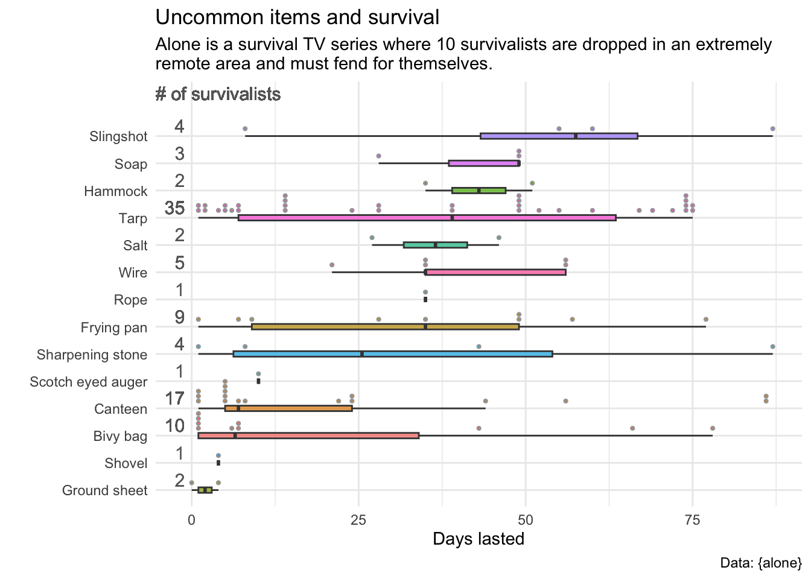

Alone TV
The Data
The data this week comes from the Alone data package by Dan Oehm.
Less common items
There are certain items which are very popular. When you look at the participants who used the less common items, which of those less common items are more associated with longer survival?
# A tibble: 27 × 2
item count
<chr> <int>
1 Pot 92
2 Fishing gear 90
3 Sleeping bag 85
4 Axe 80
5 Saw 80
6 Ferro rod 77
7 Rations 68
8 Bow and arrows 60
9 Paracord 56
10 Knife 51
# … with 17 more rows# A tibble: 14 × 2
item count
<chr> <int>
1 Tarp 30
2 Canteen 12
3 Bivy bag 8
4 Frying pan 6
5 Sharpening stone 4
6 Slingshot 3
7 Wire 3
8 Ground sheet 2
9 Hammock 2
10 Salt 2
11 Soap 2
12 Rope 1
13 Scotch eyed auger 1
14 Shovel 1Forty-seven contestants (out of the 94 original survivalists) chose to bring one or more of the less common items?
# A tibble: 47 × 2
name count
<chr> <int>
1 Brad Richardson 5
2 Brooke Whipple 4
3 Dave Whipple 4
4 Josh Richardson 4
5 Jesse Bosdell 3
6 Justin Vititoe 3
7 Alan Kay 2
8 Brody Wilkes 2
9 Carleigh Fairchild 2
10 Chris Weatherman 2
# … with 37 more rowsTo find out which less common items are associated with longer survival, we need to join the loadouts data with the survivalists data. Much of the image is copied from code due to @martijnvanbloois@fosstodon.org.

[1] "You are solid!"